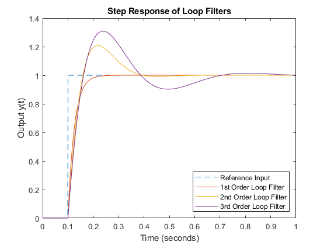
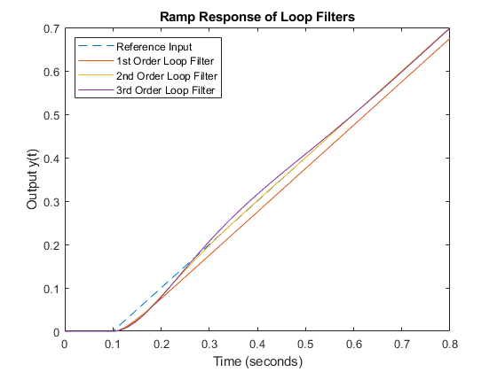
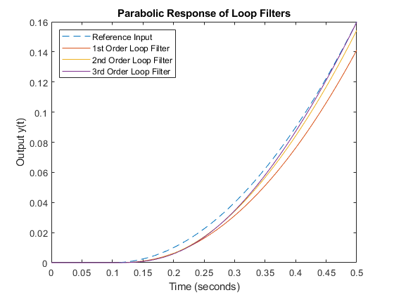
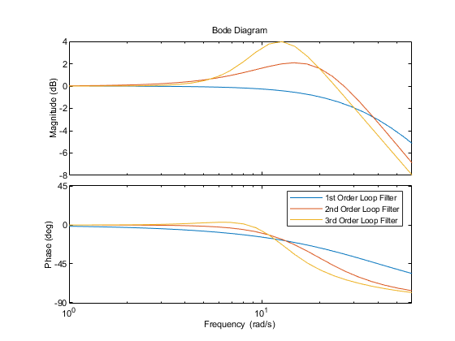

Contents
close all; clear all; clc;
b)
Bn = 10;
k1 = 4*Bn;
H1 = tf(k1,[1 k1]);
k2 = 8/3*Bn;
a2 = k2/2;
H2 = tf([k2 a2*k2],[1 k2 k2*a2]);
a3 = 1.2*Bn;
b3 = a3^2/2;
k3 = 2*a3;
H3 = tf([k3 k3*a3 k3*b3],[1 k3 k3*a3 k3*b3]);
c)
t = linspace(0,1,1000);
ustep = ones(length(t),1);
ustep(1:100) = 0;
slope = 1;
uramp = zeros(length(t),1);
uramp(101:length(t)) = slope*t(1:length(t)-100);
uquad = zeros(length(t),1);
uquad(101:length(t)) = 1/2*t(1:length(t)-100).^2;
y1step = lsim(H1,ustep,t);
y1ramp = lsim(H1,uramp,t);
y1quad = lsim(H1,uquad,t);
y2step = lsim(H2,ustep,t);
y2ramp = lsim(H2,uramp,t);
y2quad = lsim(H2,uquad,t);
y3step = lsim(H3,ustep,t);
y3ramp = lsim(H3,uramp,t);
y3quad = lsim(H3,uquad,t);
figure(1)
plot(t,ustep,'--',t,y1step,t,y2step,t,y3step);
ylabel('Output y(t)');
xlabel('Time (seconds)');
legend('Reference Input','1st Order Loop Filter','2nd Order Loop Filter','3rd Order Loop Filter','Location','southeast')
title('Step Response of Loop Filters')
figure(2)
plot(t,uramp,'--',t,y1ramp,t,y2ramp,t,y3ramp);
ylabel('Output y(t)');
xlabel('Time (seconds)');
legend('Reference Input','1st Order Loop Filter','2nd Order Loop Filter','3rd Order Loop Filter','Location','northwest')
title('Ramp Response of Loop Filters')
xlim([0 0.8])
figure(3)
plot(t,uquad,'--',t,y1quad,t,y2quad,t,y3quad);
ylabel('Output y(t)');
xlabel('Time (seconds)');
legend('Reference Input','1st Order Loop Filter','2nd Order Loop Filter','3rd Order Loop Filter','Location','northwest')
title('Parabolic Response of Loop Filters')
xlim([0 0.5])
  
d)
disp(['Ramp input Steady State Error for 1st order loop filter:', num2str(abs(y1ramp(872)-uramp(872)))])
disp(['Parabolic input Steady State Error for 2nd order loop filter:', num2str(abs(y2quad(900)-uquad(900)))])
Ramp input Steady State Error for 1st order loop filter:0.025
Parabolic input Steady State Error for 2nd order loop filter:0.0028125
e)
figure(4)
opts = bodeoptions;
opts.XLimMode = 'manual';
opts.XLim = {[1 6*10^1]};
bodeplot(H1,H2,H3,opts)
legend('1st Order Loop Filter','2nd Order Loop Filter','3rd Order Loop Filter')
